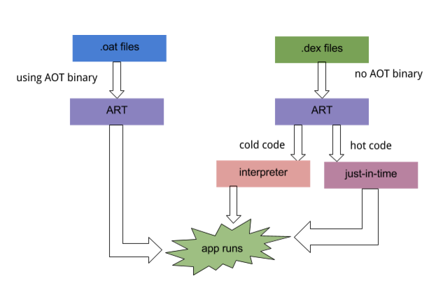
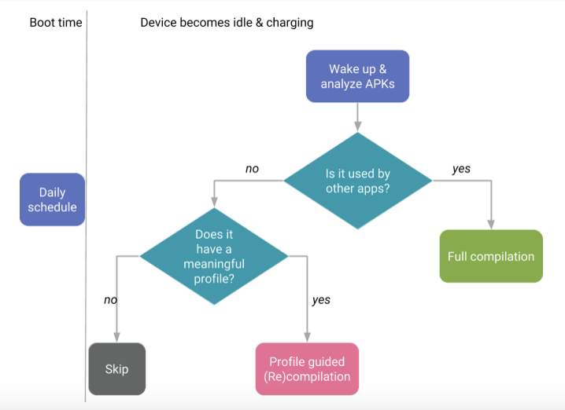
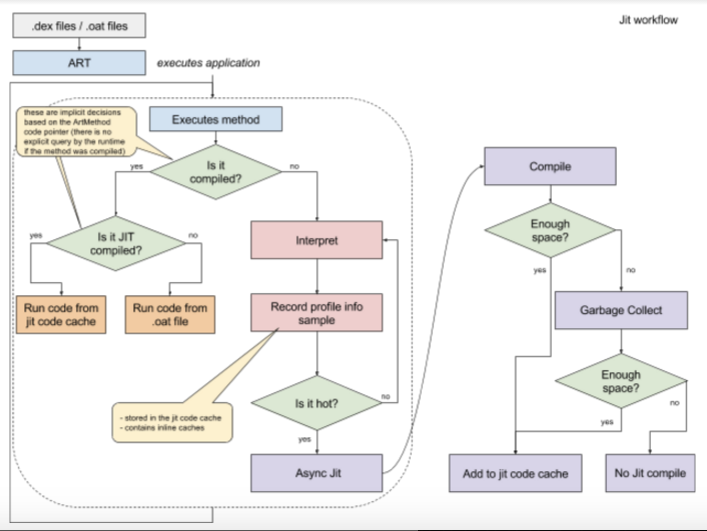

In this document
Android 7.0 adds a just-in-time (JIT) compiler with code profiling to Android runtime (ART) that constantly improves the performance of Android apps as they run. The JIT compiler complements ART's current ahead-of-time (AOT) compiler and improves runtime performance, saves storage space, and speeds app updates and system updates.
The JIT compiler also improves upon the AOT compiler by avoiding system slowdown during automatic application updates or recompilation of applications during OTAs. This feature should require minimal device integration on the part of manufacturers.
JIT and AOT use the same compiler with an almost identical set of optimizations. The generated code might not be the same but it depends. JIT makes uses of runtime type information and can do better inlining. Also, with JIT we sometimes do OSR compilation (on stack replacement) which will again generate a bit different code.
See Profile-guided JIT/AOT Compilation on developer.android.com for a more thorough overview.
Architectural Overview
Figure 1. JIT architecture - how it works
Flow
JIT compilation works in this manner:
- The user runs the app, which then triggers ART to load the .dex file.
- If the .oat file (the AOT binary for the .dex file) is available, ART uses them directly. Note that .oat files are generated regularly. However, that does not imply they contain compiled code (AOT binary).
- If no .oat file is available, ART runs through either JIT or an interpreter to execute the .dex file. ART will always use the .oat files if available. Otherwise, it will use the APK and extract it in memory to get to the .dex incurring a big memory overhead (equal to the size of the dex files).
- JIT is enabled for any application that is not compiled according to the "speed" compilation filter (which says, compile as much as you can from the app).
- The JIT profile data is dumped to a file in a system directory. Only the application has access to the directory.
- The AOT compilation (dex2oat) daemon parses that file to drive its compilation.
Figure 2. Profile-guided compilation
Figure 3. How the daemon works
The Google Play service is an example used by other apps. These application tend to behave more like shared libraries.
JIT Workflow
See the following high-level overview of how JIT works in the next diagram.
Figure 4. JIT data flow
This means:
- Profiling information is stored in the code cache and subjected to garbage collection under memory pressure.
- As a result, there’s no guarantee the snapshot taken when the application is in the background will contain the complete data (i.e. everything that was JITed).
- There is no attempt to make sure we record everything as that will impact runtime performance.
- Methods can be in three different states:
- interpreted (dex code)
- JIT compiled
- AOT compiled
- If both, JIT and AOT code exists (e.g. due to repeated de-optimizations), the JITed code will be preferred.
- The memory requirement to run JIT without impacting foreground app performance depends upon the app in question. Large apps will require more memory than small apps. In general, big apps stabilize around 4 MB.
System Properties
These system properties control JIT behavior:
dalvik.vm.usejit- Whether or not the JIT is enabled.dalvik.vm.jitinitialsize(default 64K) - The initial capacity of the code cache. The code cache will regularly GC and increase if needed. It is possible to view the size of the code cache for your app with:
$ adb shell dumpsys meminfo -d <pid>dalvik.vm.jitmaxsize(default 64M) - The maximum capacity of the code cache.dalvik.vm.jitthreshold <integer>(default 10000) - This is the threshold that the "hotness" counter of a method needs to pass in order for the method to be JIT compiled. The "hotness" counter is a metric internal to the runtime. It includes the number of calls, backward branches & other factors.dalvik.vm.usejitprofiles <true|false>- Whether or not JIT profiles are enabled; this may be used even if usejit is false.dalvik.vm.jitprithreadweight <integer>(default todalvik.vm.jitthreshold/ 20) - The weight of the JIT "samples" (see jitthreshold) for the application UI thread. Use to speed up compilation of methods that directly affect users experience when interacting with the app.dalvik.vm.jittransitionweight <integer>(dalvik.vm.jitthreshold/ 10) - The weight of the method invocation that transitions between compile code and interpreter. This helps make sure the methods involved are compiled to minimize transitions (which are expensive).
Tuning
Device implementers may precompile (some of) the system apps if they want so. Initial JIT performance vs pre-compiled depends on the the app, but in general they are quite close. It might be worth noting that precompiled apps will not be profiled and as such will take more space and may miss on other optimizations.
In Android 7.0, there's a generic way to specify the level of compilation/verification based on the different use cases. For example, the default option for install time is to do only verification (and postpone compilation to a later stage). The compilation levels can be configured via system properties with the defaults being:
pm.dexopt.install=interpret-only pm.dexopt.bg-dexopt=speed-profile pm.dexopt.ab-ota=speed-profile pm.dexopt.nsys-library=speed pm.dexopt.shared-apk=speed pm.dexopt.forced-dexopt=speed pm.dexopt.core-app=speed pm.dexopt.first-boot=interpret-only pm.dexopt.boot=verify-profile
See the Recommendation section for use.
Note the reference to A/B over-the-air (OTA) updates here.
Check $ adb shell cmd package compile for usage. Note all commands
in this document are preceded by a dollar ($) sign that should be excluded when
copying and pasting. A few common use cases:
Turn on JIT logging
$ adb root $ adb shell stop $ adb shell setprop dalvik.vm.extra-opts -verbose:jit $ adb shell start
Disable JIT
$ adb root $ adb shell stop $ adb shell setprop dalvik.vm.usejit false $ adb shell start
Force compilation of a specific package
- Profile-based:
$ adb shell cmd package compile -m speed-profile -f my-package - Full:
$ adb shell cmd package compile -m speed -f my-package
Force compilation of all packages
- Profile-based:
$ adb shell cmd package compile -m speed-profile -f -a - Full:
$ adb shell cmd package compile -m speed -f -a
Clear profile data and remove compiled code
- One package:
$ adb shell cmd package compile --reset my-package - All packages
$ adb shell cmd package compile --reset -a
Recommendation
Level of compilation/verification
Note that it is strongly recommended to use the default following
pm.dexopt settings and it is the only path we have tested and will
support.
pm.dexopt.install=interpret-only pm.dexopt.bg-dexopt=speed-profile pm.dexopt.boot=verify-profile (or interpret-only)
Here’s a detailed explanation about the pm.dexopt options, and the
reasoning for our recommendations:
pm.dexopt.install
This is the compilation filter used when installing application through the
Play Store. For faster installs we recommend interpret-only.
pm.dexopt.bg-dexopt
This is the compilation filter used when the device is idle and charging and
fully charged. We recommend using speed-profile to take advantage
of profile guided compilation and save on storage.
pm.dexopt.ab-ota
This is the compilation filter used when doing an A/B over-the-air (OTA)
update. If the device supports A/B OTA, we recommend using
speed-profile to take advantage of profile guided compilation and
save on storage.
pm.dexopt.nsys-library pm.dexopt.shared-apk pm.dexopt.core-app
You can use these different options to control how to compile essentially
applications used by other applications. For such applications, we recommend
the speed filter, as the platform does not support efficient
profiling of them.
pm.dexopt.first-boot
The compilation filter for the first time the device ever boots. The filter
used here will only affect the boot time after factory. We recommend the filter
interpret-only for it, to avoid long times before a user gets to
use the phone for the very first time. Note that if all applications in /system
are already speed compiled, pm.dexopt.first-boot has no effect.
pm.dexopt.boot
The compilation filter used after an over-the-air update. We
strongly recommend verify-profile for this
option, to avoid very long updates.
System image
This section gives recommendations on how to minimize the system image size while retaining the highest possible level of performance. Note these complement the above guidelines on the level of compilation/verification.
System image size can be reduced by opting for a lower level of compilation for
prebuilts. To achieve the best compromise between app performance and image size,
we strongly recommend compiling prebuilts with the interpret-only
filter. To do this, edit the following files to include these entries.
Add the following entry to BoardConfig.mk:
WITH_DEXPREOPT := true
Add the following entry to device.mk:
PRODUCT_DEX_PREOPT_DEFAULT_FLAGS := --compiler-filter=interpret-only
Using the interpret-only filter will reduce the optimized code
size for prebuilts by roughly half (depending on the the application) when
compared with the speed filter. It also allows the runtime to
profile the prebuilts and perform profile-guided compilation to further
save on data partition storage.
We advise against using a lower compilation/verification level
(e.g. verify-none) or disabling the optimization for prebuilts
as an effort to further save space on the system image. That will lead to slower
application startup and increased memory consumption.
Validation
To ensure their version of the feature works as intended, device implementers
should run the ART test in android/art/test. Also, see the CTS
test hostsidetests/compilation for userdedug builds.